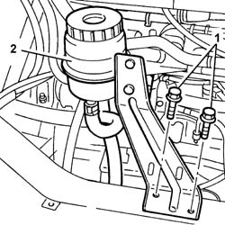
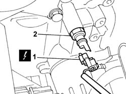
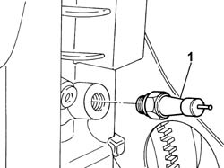
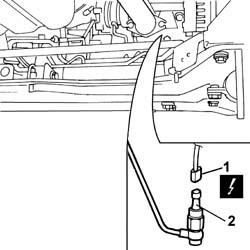

1084A42 ENGINE OIL TEMPERATURE SENDER UNIT - R + R
- Path
- Procedures > 10 ENGINE UNIT > 1084 ENGINE LUBRICATION SYSTEM > 1084A INDICATORS/CHECK DEVICES > 1084A42 ENGINE OIL TEMPERATURE SENDER UNIT - R + R
- Kind
- repair procedure (removal / refitting; the operation number is the code)
- Applies to
- engines: 2.0 16V, 2.3 JTD 16V, 2.8 JTD 8V; all production periods
- Interactive page
- https://sloeber94.github.io/elrnDB-fDct/en/#/244000922
Applies to: engines: 2.0 16V; all production periods
 Removing
Removing
 Refitting
Refitting- Disconnect the negative battery terminal.
Op. 5530A50 ALTERNATOR GUARD - R & R.
1. Undo the bolts securing the power steering fluid reservoir bracket.
2. Move the power assisted steering fluid reservoir complete with bracket aside.

Applies to: engines: 2.0 16V; all production periods
1. Disconnect the electrical connection for the engine oil pressure warning light switch.
2. Undo and remove the engine oil pressure warning light switch.

Applies to: engines: 2.0 16V; all production periods
Refitting
Removing- Tighten the engine oil pressure warning light switch in the housing.
- Connect the electrical connection for the switch.
- Position the power assisted steering fluid reservoir and tighten the bolts fixing it to the crossmember.
Op. 5530A50 ALTERNATOR GUARD - R & R.
- Connect the negative battery terminal.
Applies to: engines: 2.3 JTD 16V; all production periods
Removing
Refitting- Position the vehicle on the lift.
- Disconnect the negative battery terminal.
- Raise the lift.
Op. 7055B54 UNDER-ENGINE GUARD - R R
Op. 5520B10 STARTER MOTOR - R+R
- Disconnect the electrical connection for the switch.
 | Description | Connector |
|---|---|---|
. | Engine oil pressure sensor | K028 |
1. Undo and remove the engine oil pressure warning light switch.

Applies to: engines: 2.3 JTD 16V; all production periods
Refitting
Removing- Fit the engine oil pressure warning light switch.
 | Value - daNm | Fastening | Component | Ø |
|---|---|---|---|---|
. | 3 | - | INSUFFICIENT ENGINE OIL PRESSURE SWITCH | M14 X 1.5 |
- Connect the electrical connection.
| Description | Connector |
|---|---|---|
. | Engine oil pressure sensor | K028 |
Op. 5520B10 STARTER MOTOR - R+R
Op. 7055B54 UNDER-ENGINE GUARD - R R
- Lower the lift.
- Connect the negative battery terminal.
- Remove the vehicle from the lift.
Applies to: engines: 2.8 JTD 8V; all production periods
Removing
RefittingOp. 7055B54 UNDER-ENGINE GUARD - R R
1. Disconnect the electrical connection.
| Description | Connector |
|---|---|---|
1 | Engine oil pressure sensor | K028 |
2. Undo the sensor and remove it.

Applies to: engines: 2.8 JTD 8V; all production periods
Refitting
Removing- Tighten the sensor in the housing.
- Connect the electrical connection.
| Description | Connector |
|---|---|---|
. | Engine oil pressure sensor | K028 |